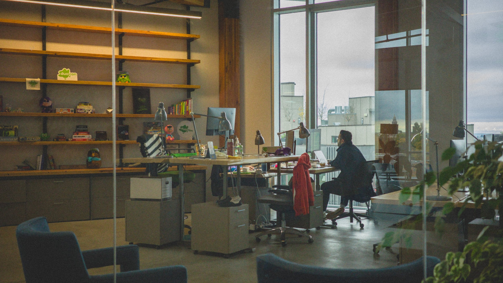

Yep, that's me. At the workspace. In the zone.
I'm a developer and designer with 3+ years of experience driving impactful design initiatives at various companies. I've led efforts in education, e-commerce, and real-time communication, creating intuitive, user-centered experiences that empower millions of people.
My love for design began long before my professional journey—tinkering with apps at hackathons and exploring creativity as a kid. What started as curiosity has grown into a passion for solving meaningful problems and crafting experiences that leave a positive impact on the world.
I thrive on tackling challenges, collaborating with diverse teams, and mentoring others along the way. Whether shaping design systems, improving internal tools, or influencing product strategy, I'm constantly driven by the opportunity to learn and grow.
Let's connect! I'd love to chat over coffee about design, ideas, or what drives you. You can schedule a meeting through my Calendly.
About
What drives my passion for design.